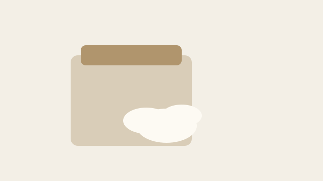

Notre histoire, depuis 1987

En 1987, Alain Demoulin reprend un petit fournil de la rue des Écluses avec deux pétrins anciens et une idée simple : du pain au levain, sans additif, pétri le jour même. La Boulangerie Demo n'a jamais changé d'adresse ni de méthode depuis.
Aujourd'hui, sa fille Camille dirige l'atelier avec une équipe de quatre boulangers. Le levain naturel est rafraîchi chaque soir, les farines viennent de moulins alsaciens, et le four à sole tourne six jours sur sept.
Cette page est volontairement courte : elle sert à tester la détection de contenu trop mince par 1.2.3._Finish.